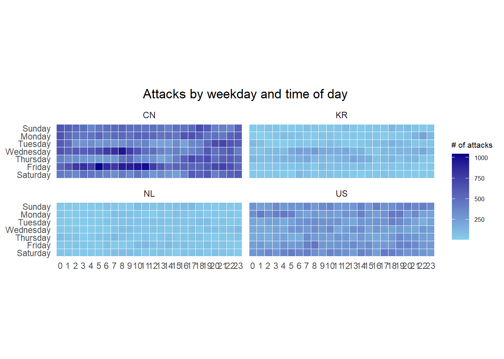
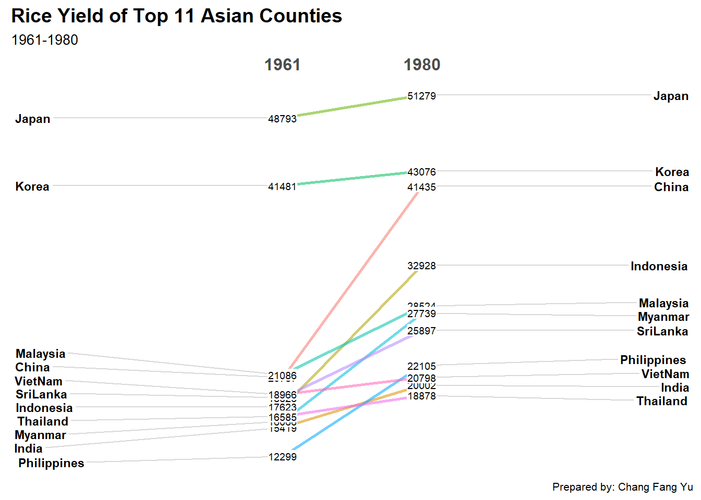

Code
pacman::p_load(scales, viridis, lubridate, ggthemes, gridExtra, readxl, knitr, data.table, CGPfunctions, ggHoriPlot, tidyverse)pacman::p_load(scales, viridis, lubridate, ggthemes, gridExtra, readxl, knitr, data.table, CGPfunctions, ggHoriPlot, tidyverse)attacks <- read_csv("data/eventlog.csv")kable(head(attacks))| timestamp | source_country | tz |
|---|---|---|
| 2015-03-12 15:59:16 | CN | Asia/Shanghai |
| 2015-03-12 16:00:48 | FR | Europe/Paris |
| 2015-03-12 16:02:26 | CN | Asia/Shanghai |
| 2015-03-12 16:02:38 | US | America/Chicago |
| 2015-03-12 16:03:22 | CN | Asia/Shanghai |
| 2015-03-12 16:03:45 | CN | Asia/Shanghai |
Step 1: Deriving weekday and hour of day fields.
make_hr_wkday <- function(ts, sc, tz) {
real_times <- ymd_hms(ts,
tz = tz[1],
quiet = TRUE)
dt <- data.table(source_country = sc,
wkday = weekdays(real_times),
hour = hour(real_times))
return(dt)
}Step 2: Deriving the attacks tibble data frame.
wkday_levels <- c('Saturday', 'Friday',
'Thursday', 'Wednesday',
'Tuesday', 'Monday',
'Sunday')
attacks <- attacks %>%
group_by(tz) %>%
do(make_hr_wkday(.$timestamp,
.$source_country,
.$tz)) %>%
ungroup() %>%
mutate(wkday = factor(
wkday, levels = wkday_levels),
hour = factor(
hour, levels = 0:23))Table after data preparing
kable(head(attacks))| tz | source_country | wkday | hour |
|---|---|---|---|
| Africa/Cairo | BG | Saturday | 20 |
| Africa/Cairo | TW | Sunday | 6 |
| Africa/Cairo | TW | Sunday | 8 |
| Africa/Cairo | CN | Sunday | 11 |
| Africa/Cairo | US | Sunday | 15 |
| Africa/Cairo | CA | Monday | 11 |
Use “theme_tufte()” to remove unnecessary chart junk: No border, no axis lines, no grids.
grouped <- attacks %>%
count(wkday, hour) %>%
ungroup() %>%
na.omit()
ggplot(grouped,
aes(hour,
wkday,
fill = n)) +
geom_tile(color = "white",
size = 0.1) +
theme_tufte(base_family = "Helvetica") +
coord_equal() +
scale_fill_gradient(name = "# of attacks",
low = "sky blue",
high = "dark blue") +
labs(x = NULL,
y = NULL,
title = "Attacks by weekday and time of day") +
theme(axis.ticks = element_blank(),
plot.title = element_text(hjust = 0.5),
legend.title = element_text(size = 8),
legend.text = element_text(size = 6) )
top_countries <- attacks %>%
count(source_country) %>%
top_n(4, n) %>%
pull(source_country)
grouped <- attacks %>%
filter(source_country %in% top_countries) %>%
count(source_country, wkday, hour) %>%
ungroup() %>%
na.omit()
ggplot(grouped, aes(hour, wkday, fill = n)) +
geom_tile(color = "white", size = 0.1) +
theme_tufte(base_family = "Helvetica") +
coord_equal() +
scale_fill_gradient(name = "# of attacks",
low = "sky blue",
high = "dark blue") +
labs(x = NULL, y = NULL,
title = "Attacks by weekday and time of day") +
theme(axis.ticks = element_blank(),
plot.title = element_text(hjust = 0.5),
legend.title = element_text(size = 8),
legend.text = element_text(size = 6)) +
facet_wrap(~ source_country)
Step 1: Deriving attack by country object
attacks_by_country <- count(
attacks, source_country) %>%
mutate(percent = percent(n/sum(n))) %>%
arrange(desc(n))Step 2: Preparing the tidy data frame
top4 <- attacks_by_country$source_country[1:4]
top4_attacks <- attacks %>%
filter(source_country %in% top4) %>%
count(source_country, wkday, hour) %>%
ungroup() %>%
mutate(source_country = factor(
source_country, levels = top4)) %>%
na.omit()Step 3: Plotting Multiple Calendar Heatmaps
ggplot(top4_attacks,
aes(hour,
wkday,
fill = n)) +
geom_tile(color = "white",
size = 0.1) +
theme_tufte(base_family = "Helvetica") +
coord_equal() +
scale_fill_gradient(name = "# of attacks",
low = "sky blue",
high = "dark blue") +
facet_wrap(~source_country, ncol = 2) +
labs(x = NULL, y = NULL,
title = "Attacks on top 4 countries by weekday and time of day") +
theme(axis.ticks = element_blank(),
axis.text.x = element_text(size = 7),
plot.title = element_text(hjust = 0.5),
legend.title = element_text(size = 8),
legend.text = element_text(size = 6) )
Step 1: Data Import
air <- read_excel("data/arrivals_by_air.xlsx")Step 2: Deriving month and year fields
air$month <- factor(month(air$`Month-Year`),
levels=1:12,
labels=month.abb,
ordered=TRUE)
air$year <- year(ymd(air$`Month-Year`))Step 3: Extracting the target country
Vietnam <- air %>%
select(`Vietnam`,
month,
year) %>%
filter(year >= 2010)Step 4: Computing year average arrivals by month
hline.data <- Vietnam %>%
group_by(month) %>%
summarise(avgvalue = mean(`Vietnam`))Step 5: Plotting the cycle plot
ggplot() +
geom_line(data=Vietnam,
aes(x=year,
y=`Vietnam`,
group=month),
colour="black") +
geom_hline(aes(yintercept=avgvalue),
data=hline.data,
linetype=6,
colour="red",
size=0.5) +
facet_grid(~month) +
labs(axis.text.x = element_blank(),
title = "Visitor arrivals from Vietnam by air, Jan 2010-Dec 2019") +
xlab("") +
ylab("No. of Visitors") +
theme_tufte(base_family = "Helvetica")
Step 1: Data Import
rice <- read_csv("data/rice.csv")Step 2: Plotting the slopegraph
rice %>%
mutate(Year = factor(Year)) %>%
filter(Year %in% c(1961, 1980)) %>%
newggslopegraph(Year, Yield, Country,
Title = "Rice Yield of Top 11 Asian Counties",
SubTitle = "1961-1980",
Caption = "Prepared by: Chang Fang Yu")